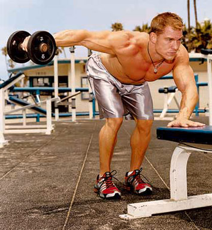

Bench Press ili Ravni bench
Širina ramena je dobrodošla kako kod muškoga, tako i kod ljepšega spola. Muškom dijelu populacije bitna je jer tvori najvišu točku onog famoznog atletskog X oblika. S druge strane, žene širinom ramena dobivaju iluziju tanjeg struka, tako da tijelo dobiva tipični ženski oblik pješčanog sata kod kojeg je struk najuži dio, a tijelo od njega širi prema gore i prema dolje (u jednom od sljedećih članaka bit će obuhvaćen i taj donji dio). Nažalost, širina ramena je dobrim dijelom određena koštanom strukturom, točnije dužinom ključnih kostiju. Sretna okolnost je da postoji i nešto što možemo proširiti, a to su deltoidni mišići. Najdramatičniji utjecaj na širinu ramena će, dakle, imati razvijeni vanjski dio deltoida, a cjelokupnoj slici će doprinijeti i razvijeni ostali dijelovi ramenog obruča.
Deltoidni mišić se sastoji od 3 glave: prednje, srednje (bočne ili lateralne) i stražnje. Prema novijim podjelama postoji čak sedam dijelova deltoidnog mišića (Poliquin). Kako god bilo, gotovo je nemoguće napraviti trening koji uključuje potiske, odnosno trening sa povlačenjem, bez da aktiviramo neki dio deltoidnog mišića. Neki idu toliko daleko da su mišljenja kako deltoidne mišiće ne bi trebalo uopće zasebno trenirati.
Osobno smatram da samo korištenje deltoida kao pomagača kod treninga prsa ili leđa ne aktivira i ne potiče rame na rast u dovoljnoj mjeri, već je specijalizirani trening ramena neophodan. Prije nego krenemo sa samim odabirom vježbi, treba naglasiti da je rameni zglob zbog svojega kuglastog oblika (pokretljivost u svim smjerovima), vrlo slabo zaštićen. Zato ga je vrlo lako preopteretiti ili čak lošim odabirom vježbi i nepravilnom tehnikom izvođenja dovesti do ozljede.
Nakon adekvatnog zagrijavanja i razgibavanja ramena, krećemo s treningom...
Četri najbolje vjezbe za ramena
1. Sjedeći vojnički potisak - Military press
Jedna od najčuvenijih vježbi i definitivno najbolja kada su u pitanju prednji deltoidi uz aktivaciju ostalih. Može se izvoditi sa šipkom ili sa bučicama, a ono na šta posebno treba obratiti pažnju je to da se uprkos prilično jednostavnom izvođenju, ne pretjeruje sa kilažom jer upravo ova vježba nerijetko izaziva teške povrede ramena.
2. Prednje podizanje bučica
Direktno pogađa prednje deltoide i s punim pravom spada među preporučene vježbe za ramena. Izvoditi se može naizmjenično, ali i istovremeno objema rukama. Suština je ista, iz početne tačke, teg podići do nivoa očiju, zadržati sekundu-dvije, te se vratiti u početni položaj. Moguće je izvođenje iste vježbe i sa šipkom, ali se zbog manjeg opterećenja na leđa i samu kičmu više preporučuje verzija sa bučicama.
3. Bočno podizanje bučica ili povlačenje sajle
Srednji deltoidi zaduženi za vizuelnu širinu, nisu mišići koje treba posebno predstavljati. Poticanje njihovog razvoja najjednostavnije je bočnim podizanjem težine. Dakle, od početne tačke pa do visine ramena, vodeći pritom računa da se ruke u laktovima ne savijaju previše. Osim sa bučicama (pojedinačno ili objema u isto vrijeme), može se izvoditi i povlačenjem sajle u stranu.
4. Obrnuto podizanje bučica u savijenom položaju
Zadnji deltoid često ostaje zapostavljen od strane vježbača koji nemaju na umu to da je jednako važna i širina ramena gledano iz profila, baš kao i kada se gleda iz ostalih uglova. Vježba se izvodi u sjedećem savijenom položaju, tako da se prsa primaknu koljenima, te se polako, bez većeg savijanja laktova bučice sa poda podižu do maksimalnih visina.